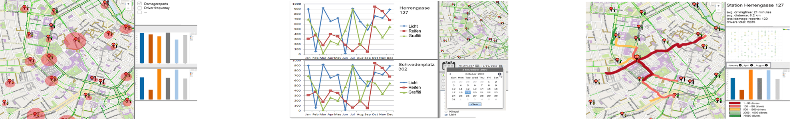
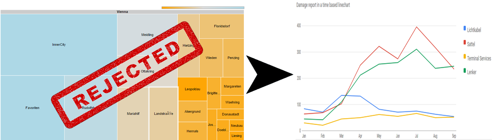
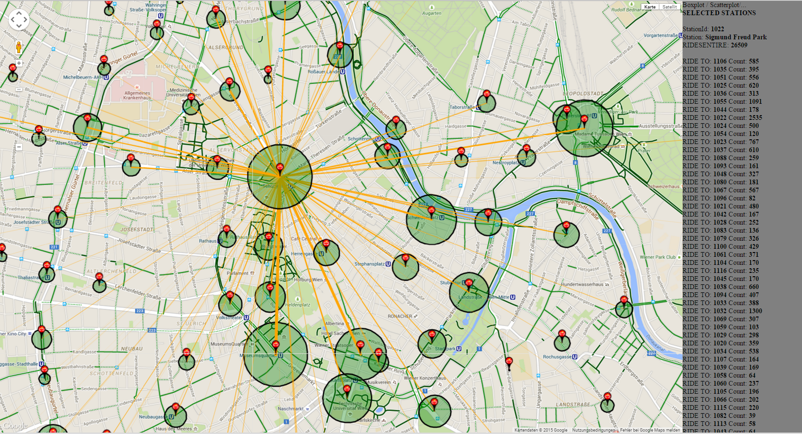
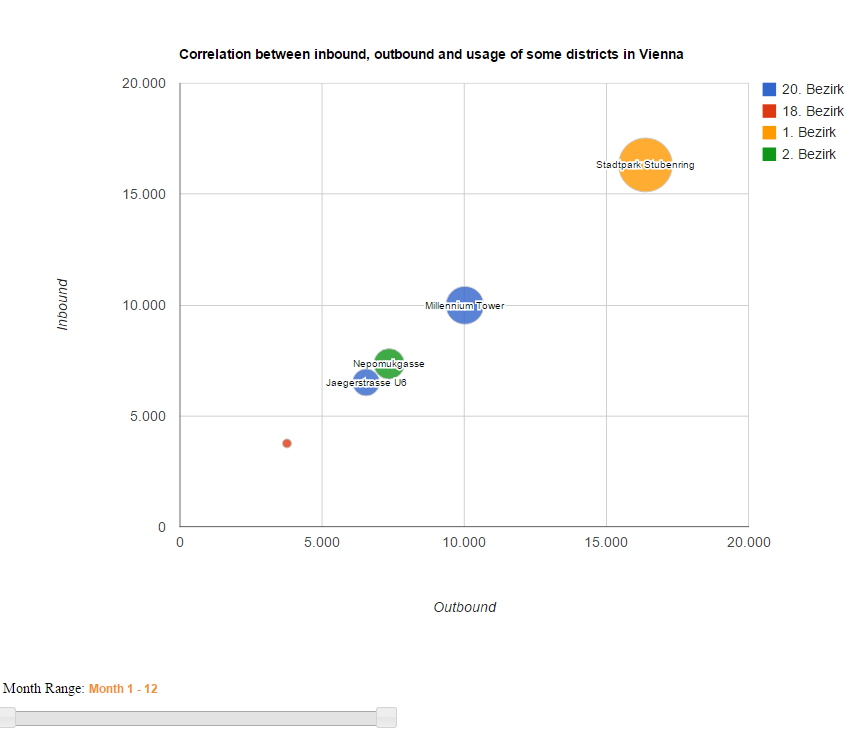
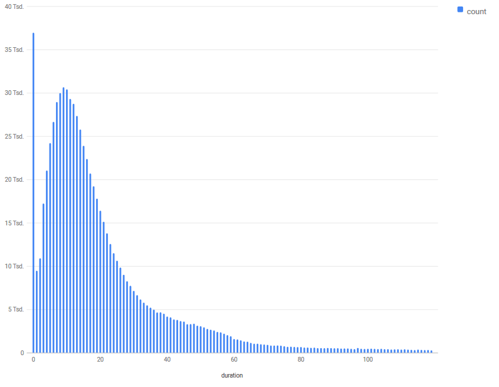
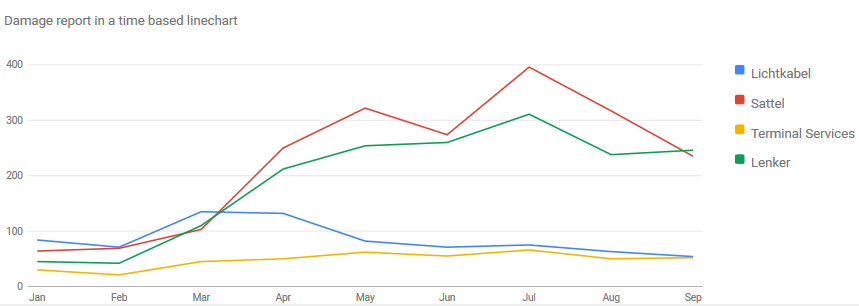

Problem
In the early stage of our visualization project we were provided with a complex dataset of the city bike service. Based on this various datasets we tried to fullfill our use-case and build a web application of the city bike service which helps to explore the quite obscure dataset in a self-explaining and interactive way.
Use Case
When we've been developing and evaluating our possible target users, we decided, that we won't limit our visualization to a certain user group, but rather provide a visualization for all the people out there, which are curious and willing to consume information about the city bike service. Summarized we could say, that our visualization is based on the ideas of a data driven journalism report.

Solution Attempts
In the beginning we created three possible low fidelity prototypes, in which we tried to look at the data in a different perspective. When we started to work on this project it was clear from the first moment that we'd like to integrate a mapview to our visualization. So every prototype of ours got at least a small map view in it. Here you can see a small thumbnail of the 3 low fidelity prototypes ( if you'd like to take a closer look at those prototypes just navigate to our "Solution Attempts" in the navigation bar in the top or click on the prototypes) :

After some feedback from the class and the professors we tried to build a high fidelity prototype, where we kind of pushed it to the limits of the datasets. We built a quite elaborate datamanipulation tool in C#.NET, which calculated data from different csv-files and provided a easily understandable JSON-file. In one of our first prototypes we'd the idea to build a scatterplot which shows us dependency between driven kilometers and the time spent on a bike. In our opinion this would've been a great chart to look at and to answer questions like "Are people driving faster in winter because it's cold?" or "Are people from the outer districs faster drivers, because they are used to drive longer routes?". Unfortunately there have been some problems:
The google maps API only allows a certain amount of calls within a specific time range.
If we would have loaded the whole necessery data in the beginning the JSON-file would have increased in size to a peak where we just couldn't warrant a smooth usage of our visualization.
And last but not least, there've been always the problem that we didn't know anything about the driven routs except the startpoint and the endpoint. What happened in the middle, well, stays in the middle. For us, this wouldn't have been a huge problem, because the generated chart would've told a story anyway, but at least it was a limitation, which made us think about it.
The attempt to map the damagereports data to specific station id's failed, so we had to delete our initially planned treechart and replace it with a less sophisticated linechart. At first we thought that the mapping would be possible for some of the stations, but as it turned out, the damagereports could just be mapped to a specific mechanic.

Implementation
The Map-View
At the moment we've got an interactive map which shows us all the citybike stations. If you click on a station the lines between stations are drawn. These lines represent the trafficamount (represented through the
line thickness) among the stations. The terminals coloured circles illustrate the total amount of traffic at the stations. If the circle is bigger there is more traffic, if the circle is
smaller there is less traffic. The panel on the right, gives us some developer information about the dataset and will be replaced with the charts. Also it's possible to select more than
one station, this is important for our comparable charts, which will be added at a later point. To select more than one station you have to press the "CRTL"-key and hold it while clicking on a station.

The Bubblechart-View
The Bubble-Chart gets the stations-ID from the clickable map, depending on which station is selected. It shows the correlation between incoming and outgoing rides, as well as the entire usage for the chosen stations. It is also possible to see the incoming and outgoing rides for specific months through the slider under the chart. This will also change the x- and y- axis's range. The color of the bubbles are dependent of their districts and the size of the entire usage. If two stations have the same color, then they're in the same district. Also there is a mouseover-effect to see a tooltip which holds the specific details.

The Histogram-View
The histogram is a little trimmed version of the initially planned scatterplot, which should've shown the correlations between the kilometers of a driven route related to the time needed. However the bins of the histogram ( on the x-axis) are the minutes spent on the bike per ride. The y-axis shows us the amount of rides with this specific loan duration. Like the bubblechart, the histogram is affected by the month-picker. So we can look at the driven time durations for a specific month or just for the summer month.

The LineChart-View
The line chart is also affected by the monthpicker and shows the annual progress of the damage-report amounts. With this view, we'd like to point out the most common damage reports in the city bike service and in which month they appear.

TIME FOR A LIVE DEMO
Results and Analysis
weisst w
Questions